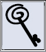
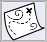
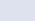

Key Concepts

• Lawyers may communicate practice areas when advertising, including specialization in particular fields of law.
• Lawyers may not claim certification as a specialist unless the certifying entity is identified clearly and approved by the bar association.

Like anyone competing for business in a limited market, lawyers want to distinguish themselves from competitors. One common business method to distinguish a service from competitors is to tout the experience or specialization of the person providing that service. You can imagine the advertising slogans: “Four out of five dentists agree—the most experienced medical malpractice lawyer in the State!” Rule 7.4 governs how lawyers as licensed professionals may advertise about particular areas of expertise and practice specialty.
Rule 7.4 includes three provisions addressing communications by lawyers about their practice areas:
Communication of Fields of Practice and Specialization
(a) A lawyer may communicate the fact that the lawyer does or does not practice in particular fields of law.
(b) A lawyer admitted to engage in patent practice before the United States Patent and Trademark Office may use the designation “Patent Attorney” or substantially similar designation.
(c) A lawyer engaged in Admiralty practice may use the designation “Admiralty,” “Proctor in Admiralty” or a substantially similar designation.
Rule 7.4 generally authorizes lawyers to advertise practice areas, including information about matters that the lawyer will not handle.1 Moreover under this authority to identify practice areas, the Delaware Lawyers’ Rules of Professional Conduct permit advertisements that “the lawyer is a ‘specialist,’ practices a ‘specialty,’ or ‘specializes in’ particular fields.”2 All these kinds of communications, however, “are subject to the ‘false and misleading’ standard applied in Rule 7.1 to communications concerning a lawyer’s services.”3 Therefore, before advertising as a “specialist” in a particular area, a lawyer should consult Rule 1.1’s competence standards and assess the norms of that field of law carefully—being competent in intellectual property law may well not be the same thing as being a “specialist” in intellectual property litigation, for instance. Because of this concern, some jurisdictions restrict a lawyer’s ability subjectively to state or imply that they are a “specialist,” and generally limit the lawyer to identifying practice areas.4
In contrast to a lawyer self-identifying as a “specialist” in a particular field, sometimes external entities or organizations may identify the lawyer as a specialist or expert. Rule 7.4 contains a fourth provision that prohibits lawyers from representing that they are certified specialists in particular fields, absent two conditions:
Communication of Fields of Practice and Specialization
(d) A lawyer shall not state or imply that a lawyer is certified as a specialist in a particular field of law, unless:
(1) the lawyer has been certified as a specialist by an organization that has been approved by an appropriate state authority or that has been accredited by the American Bar Association.
(2) The name of the certifying organization is clearly identified in the communication.
Rule 7.4(d) distinguishes a lawyer’s claim to a particular specialty from a lawyer’s claim to being a certified specialist. For a lawyer to claim that he or she is a certified specialist: (1) the lawyer must be certified by an organization that is “approved by an appropriate state authority” or “accredited by the American Bar Association,”5 and (2) the lawyer clearly must identify the name of the certifying organization in the communication.6 This Rule recognizes that consumers can benefit from learning whether an objective and established entity in a particular field of law has certified a lawyer as possessing greater experience, knowledge, and proficiency than what is required for general licensure to practice law.7
Consider whether this lawyer’s LinkedIn profile violates the rules governing communication of legal specialization:

Example. Lawyer Ramona, an attorney practicing in New York State, maintained a profile on LinkedIn. Ramona’s LinkedIn connections regularly endorsed Ramona’s skills and experience in a wide range of practice areas. Ramona was careful to publicize only endorsements that were truthful and not misleading about her legal skills and experience. Another lawyer viewing Ramona’s LinkedIn profile complained to the State bar 138that Ramona improperly was advertising herself as a specialist in all these fields of law.
Analysis. This problem demonstrates how language and localization of ethics rules can matter greatly as to whether a lawyer’s communication violates the rule governing specialization claims. Ramona’s LinkedIn profile likely did not violate Rule 7.4, so long as her LinkedIn profile’s Skills and Experience section remained truthful and not misleading and did not state or imply that Ramona had been certified as a specialist in those areas.
New York State’s version of Rule 7.4 does not allow a lawyer to claim that the lawyer is a specialist in a particular field of law at all absent an approved certification under the Rule.8 LinkedIn’s online endorsement feature previously identified user “specialties” in their profile. In response, the New York State Bar Association opined that LinkedIn’s endorsement feature violated New York’s rule absent an approved certification.9 But, in March of 2012, LinkedIn replaced the “specialties” option in user profiles with “Skills and Experience.”10 What is the ethics upshot of this seemingly small change in language? As one expert on lawyers and social media recently observed, “I don’t see anything in Rule 7.4 that would prevent lawyers from using the Skills and Experience section of LinkedIn. New York’s version of Rule 7.4 only prevents lawyers who aren’t certified from listing themselves as specialists.”11
Note, however, that LinkedIn’s change in language may not matter much in states like South Carolina. South Carolina also prohibits lawyers from claiming any specialization without an approved certification.12 But, “[t]o avoid confusing or misleading the public and to protect the objectives of the South Carolina certified specialization program, any such advertisement or statement [lacking an approved certification] … shall not contain any form of the words “certified,” “specialist,” “expert,” or “authority.”13 Following LinkedIn’s change, South Carolina apparently alerted bar members of the continuing 139prohibition on lawyers publicly displaying the Skills and Experience section of LinkedIn without an approved certification.14
The same expert on lawyers and social media has argued that inconsistencies of this sort demonstrate that Rule 7.4 provides only “a lot more confusion for lawyers—and little if any protection of consumers.”15 Regardless of the merit of this argument, lawyers must learn local rules before communicating specialization or expertise through LinkedIn, other social media, or any other online media. Otherwise, a fairly clear ethics complaint may follow.
Quick Summary
Under the Rules of Professional Conduct, lawyers may identify practice areas in advertising. This authority extends to truthful and non-misleading claims of specialization—such as “Trial Specialist.” Lawyers further may distinguish themselves by communicating about certifications of specialization in particular fields of law, if the certifying entity is identified clearly and approved by the Bar. But, lawyers must remain careful about how they communicate unique skills or experience to avoid deception or unjustified expectations. Moreover, many jurisdictions more significantly limit how lawyers may communicate about specialization, so lawyers must learn these rules.
Test Your Knowledge
To assess your understanding of the material in this chapter, click here to take a quiz.
1 See DLRPC Rule 7.4, comment 1.
2 Id.
3 See DLRPC Rule 7.4, comment 1.
4 See e.g., Washington Rules of Professional Conduct, Rule 7.4(d).
5 DLRPC Rule 7.4(d)(1).
6 See DLRPC Rule 7.4(d)(2).
7 See DLRPC Rule 7.4, comment 3.
8 See N.Y. RPC 7.4(a) and (c).
9 See Carolyn Elefant, Why New York’s Recent Ethics Opinion on LinkedIn Shows the Folly of Regulating the Minutia of Social Media, myShingle.com (Aug. 30, 2014), available at http://myshingle.com/2013/08/articles/ethics-malpractice-issues/why-new-yorks-recent-ethics-opinion-on-linkedin-shows-the-folly-of-regulating-the-minutia-of-social-media/ (last visited March 20, 2014).
10 See id.
11 Id.
12 See S.C. RPC 7.4(a).
13 S.C. RPC 7.4(b) (emphasis added).
14 Elefant, Why New York’s Recent Ethics Opinion on LinkedIn Shows the Folly of Regulating the Minutia of Social Media, myShingle.com, supra note 8, linking to Jim Dedman, South Carolina and the LinkedIn “Loophole”, abnormaluse.com (March 4, 2013), available at http://abnormaluse.com/2013/03/the-south-carolina-bar-and-thelinkedin-loophole.html (last visited March 20, 2014).
15 Elefant, Why New York’s Recent Ethics Opinion on LinkedIn Shows the Folly of Regulating the Minutia of Social Media, myShingle.com, supra note 8.